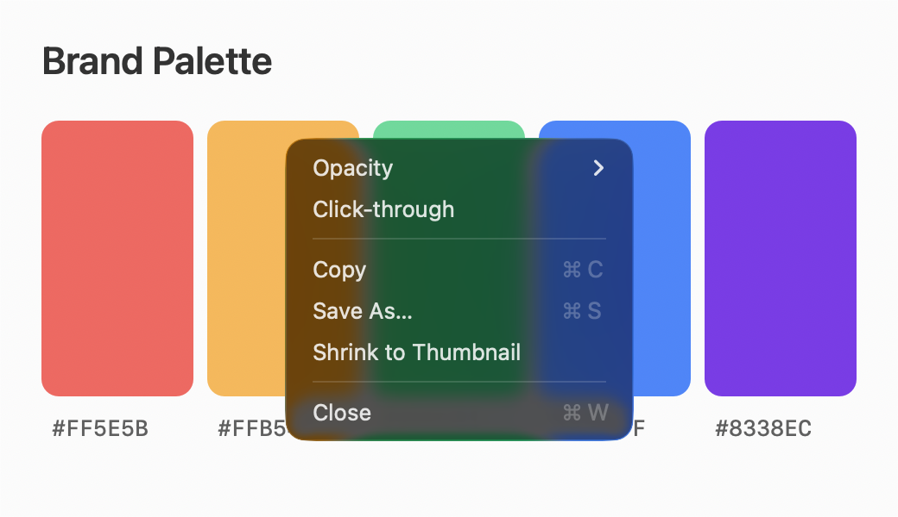
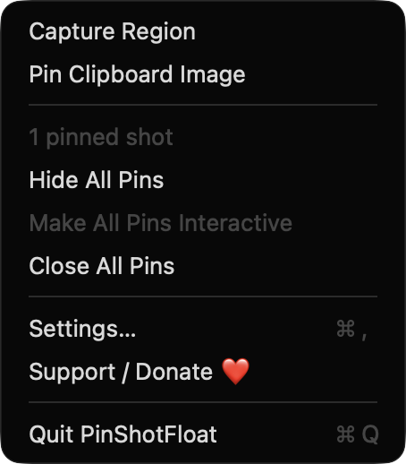
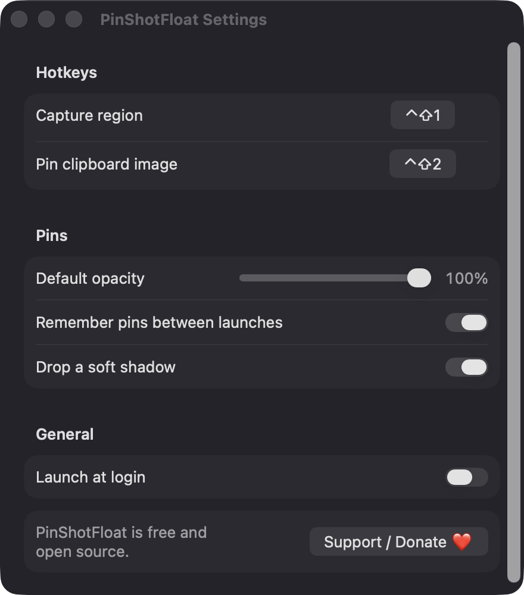

Region capture on every display
A global hotkey dims all your displays so you can drag out a region. Capture uses ScreenCaptureKit at native Retina resolution, and Esc or right-click cancels.
Open source · macOS 14+ · Universal binary · Menu Bar Utility
Press Control-Shift-1, drag over any part of your screen, and it becomes a floating window that stays on top. Resize it, fade it, or click through it.
Free & MIT licensed · Apple Silicon & Intel · Latest release

Features
Everything you need to keep a reference in view, and nothing you don't.
A global hotkey dims all your displays so you can drag out a region. Capture uses ScreenCaptureKit at native Retina resolution, and Esc or right-click cancels.
Each pin appears exactly where the pixels were taken. It floats over other windows, on all Spaces and over full-screen apps, without stealing focus.
Drag the edges to resize with the aspect ratio locked. Option-scroll or use the right-click menu to set opacity down to 10 percent, or let the mouse pass straight through.
A second hotkey, Control-Shift-2, pins any PNG, TIFF, JPEG or PDF image on your clipboard, centered on the pointer and scaled to fit the screen.
Copy a pin back to the clipboard, save it as PNG, or turn on remembering to restore your pins at the next launch. Show, hide or close all of them from the menu bar.
Change both hotkeys in Settings, along with default opacity, a soft drop shadow and launch at login. Double-click a pin to flip it to a thumbnail and back.
Screenshots


Install
PinShotFloat is open source and not notarized with a paid Apple Developer ID, so macOS needs one extra step the first time.
xattr -cr /Applications/PinShotFloat.app
Download
Free, forever. Built for macOS 14 Sonoma or newer, Apple Silicon and Intel.
Not notarized: on first launch right-click PinShotFloat.app → Open.
FAQ
Yes. It is released under the MIT license, with no accounts, subscriptions or ads. If it saves you time you can support development through the Ko-fi button in the menu bar or Settings.
Screen Recording, so it can capture a region of your screen. Launch at login is optional and uses the standard login item system. It does not ask for Accessibility or Microphone access.
Only on your Mac. The app has no network access. If you enable remembering pins, they are saved as PNG files with a small JSON manifest in ~/Library/Application Support/PinShotFloat/Pins.
Notarization requires a paid Apple Developer account, and this is a free project. Right-click the app and choose Open once to launch it, or build it yourself from source with Xcode.
Support ❤️
PinShotFloat is a free, open-source alternative to paid utilities. If it earns a spot on your Mac, a coffee keeps the updates coming.
☕ Support Or on Ko-fi